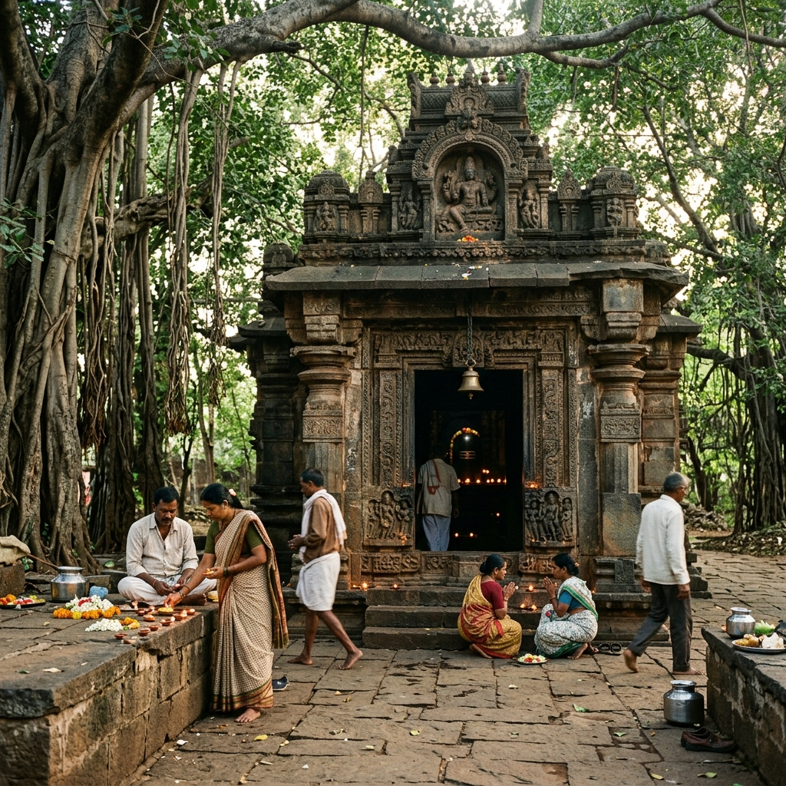

The Sacred Trail
A spiritual guide to the divine temples nestled within the sacred forest region of Bidar — each a jewel in a garland of devotion.
A spiritual guide to the divine temples nestled within the sacred forest region of Bidar — each a jewel in a garland of devotion.
The forest region surrounding Sri Anantha Padmanabha Temple is home to a remarkable constellation of sacred shrines, each dedicated to a different deity and each offering a unique spiritual experience. Together, these temples form the Sacred Trail — a pilgrimage route that has been walked by devotees for centuries.
From the serene Vishnu Mandir to the powerful Shani Mahatma Temple, from the ancient Mailar Mallanna shrine to the revered Manik Prabhu Mandir, each temple along the trail tells its own story of faith, devotion, and divine grace. The trail connects these sacred spaces through beautiful forest pathways, making the journey itself a meditative experience.
Whether you undertake the complete trail in a single day or visit the temples over multiple visits, the Sacred Trail promises a transformative spiritual experience that deepens with each step taken along its ancient path.

Discover the six sacred temples that form the divine pilgrimage circuit through the forest region near Bidar.
 ~3 KM
~3 KM
A beautiful ancient shrine dedicated to Lord Vishnu, situated in a serene forest clearing. Known for its exquisite stone carvings and the peaceful atmosphere that surrounds the sanctum. Devotees gather here for daily aarti and special abhishekam.
 ~7 KM
~7 KM
Perched on a scenic hillside, this revered temple is dedicated to Lord Mallanna (Mailarlingeshwara), a form of Lord Shiva deeply venerated in the Deccan region. The temple is known for its vibrant annual festival and panoramic forest views.
 ~5 KM
~5 KM
A powerful temple dedicated to Lord Shani (Saturn), believed to alleviate the effects of Shani Dosha. Devotees offer mustard oil and black sesame seeds in traditional worship. The temple is especially crowded on Saturdays.
 ~12 KM
~12 KM
A revered shrine dedicated to Shri Manik Prabhu, a 19th-century saint who preached the unity of all religions. The temple complex includes a samadhi shrine, a meditation hall, and beautiful gardens. A place of interfaith harmony.
 ~8 KM
~8 KM
Dedicated to Lord Vitthal (a form of Krishna) and his consort Rukmini, this temple is a center of Bhakti tradition in the region. The temple is known for its soulful abhanga singing, community kirtans, and the annual Pandharpur yatra.
 ~10 KM
~10 KM
Named after the cow-mouth (Gaimukh) shaped rock from which a sacred spring emerges, this ancient temple is a site of natural wonder and spiritual significance. The holy water is believed to have purifying and healing properties.

~40 KMLocated in the countryside of Kosam village near Changler, this sacred Shiva shrine serves as the vital spiritual guardian for local farmers. Worshipped as a stone Shiva Lingam, it offers a serene and uncommercialized environment.
Follow this curated pilgrimage route to experience each temple along the Sacred Trail in the ideal sequence, maximizing both spiritual impact and travel convenience.
Experience the entire Sacred Trail in a single transformative day. Here's the ideal schedule for your spiritual journey.
Arrive at Sri Anantha Padmanabha Temple for the sacred Suprabhatam. Watch the forest come alive with the first light as you attend the morning aarti.
Walk the forest path to Vishnu Mandir and Shani Mahatma Temple. Enjoy the meditative walk through the sacred grove with birdsong as your companion.
Visit Mailar Mallanna on the hilltop and Vitthal Rukmini Mandir. Enjoy prasadam lunch at one of the temple community kitchens.
Complete the trail at Gaimukh and Manik Prabhu temples. Return for the evening Deeparadhana at the main temple as the sun sets over the forest.

The trails connecting these temples wind through one of the most pristine forest ecosystems in the Bidar region. Walking these ancient paths is itself a spiritual practice — a gradual immersion into the sacred landscape where every tree, every birdsong, and every beam of sunlight through the canopy feels divinely orchestrated.